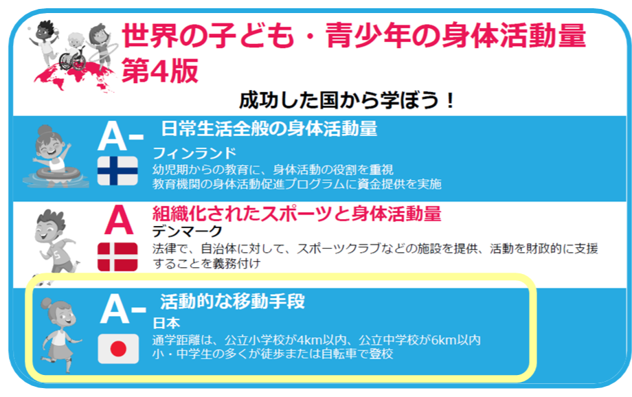
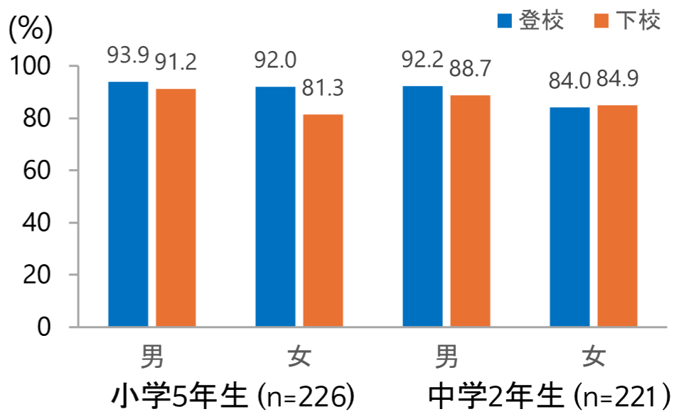
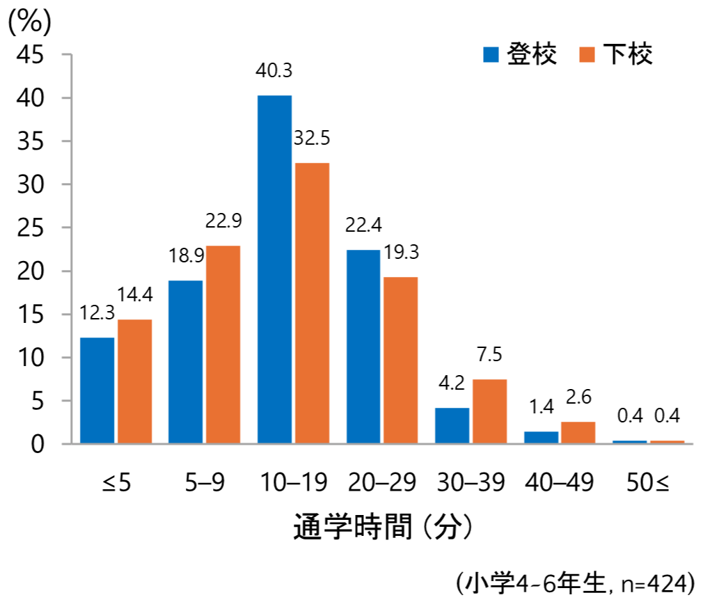
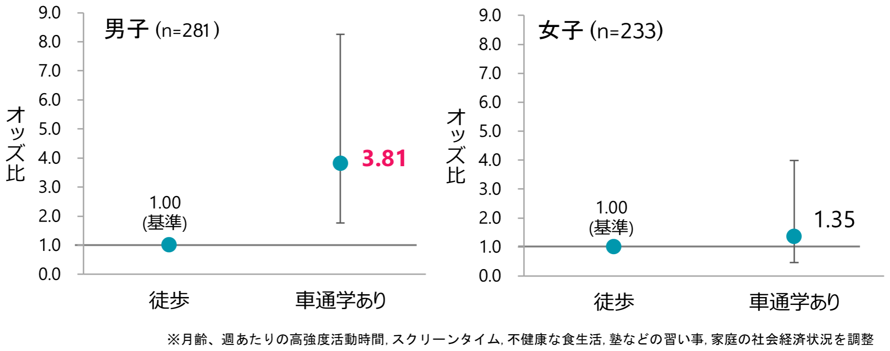
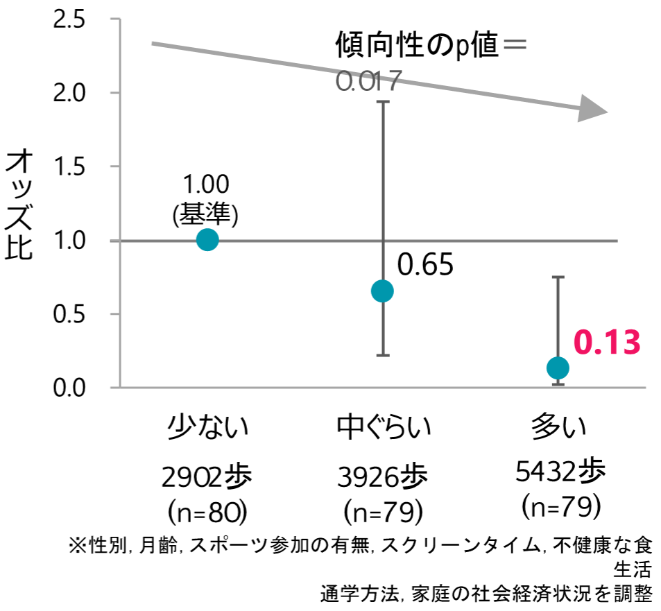

活動的な通学と子どもの肥満との関係
毎日の登下校は単なる移動ではない
活動的な通学とは、徒歩や自転車など、身体活動を伴う方法で通学することを指します。2025年の全国調査では、小学生の91%、中学生の85%が徒歩または自転車で通学していました（笹川スポーツ財団、子ども・青少年のスポーツライフ・データ2025）。日本の活動的な通学の割合は世界的に高水準にあり、2022年の国際比較では、参加した国・地域の中で最高水準でした（図1） 。
一方、少子化に伴う学校の統廃合による通学距離の延長や、通学中の交通事故への不安などを背景に、スクールバスや自家用車による送迎が増え、活動的な通学が減少する可能性が指摘されています。
ここでは、山梨県甲州市の小中学生の活動的な通学の状況と、肥満との関連を紹介します。

なぜ活動的な通学に注目するのか
これまでの報告では、徒歩や自転車で通学する子どもは、車やバスで通学する子どもよりも、1日全体の身体活動量が多い傾向にあることが報告されています (Larouche et al., 2014)。また、活動的な通学によって、子どもに推奨される1日60分の中高強度の身体活動の約半分を確保できる可能性も報告されています (Campos-Garzon et al., 2023)。日本の研究においても、徒歩で通学する時間が長い子どもほど、歩数や中高強度の身体活動時間が多いことが示されています (Sasayama K. 2026)。しかし、活動的な通学と肥満の関連については、結果が一致しておらず、十分に明らかになっていません。
子どもの活動的な通学と肥満との関連を調べる
山梨県甲州市の小中学生を対象に、活動的な通学をしている割合や通学にかかる時間を調べました。さらに、活動的な通学と肥満との関連を２つの研究で調べました。
1つ目の研究では、小学4年生~6年生514人を対象に、通学方法を、「徒歩」のみのグループと、登校または下校のどちらかで、スクールバスや自家用車を利用する「車通学あり」の2グループに分けて、肥満傾向との関連を男女別に調べました。
2つ目の研究では、小学4・5年生238人に、手首装着型の活動量計を着けてもらい、登下校時間帯の歩数を測定しました。登下校時の歩数によって、「少ない」、「中ぐらい」、「多い」の3グループに分け、肥満傾向との関連を調べました。
活動的な通学をしている子どもで、肥満傾向の割合が少ない可能性がある
活動的な通学をしていた割合は、小学5年生では登校時が93%、下校時で86%、中学2年生では、登校時が88%、下校時で87%でした（図2）。

通学時間は10～19分が最も多く、全体の約40%を占めていました。また、登校時よりも下校時の方が所要時間が長い傾向がみられました（図4） 。

通学方法と肥満との関連を調べたところ、男子では、「徒歩」グループと比較して、「車通学あり」のグループで肥満傾向児の割合が多いことが示されました。女の子では、明確な関連は見られませんでした（図3）。

また、登下校時間帯の歩数が多いグループは、少ないグループと比較して肥満傾向児の割合が少なく、登下校時間帯の歩数が多いほど、肥満傾向児の割合が少ないことが示されました（図5） 。

実践への示唆：安全に活動的な通学ができる環境を地域で支える
登下校は、子どもが日常生活の中で無理なく身体を動かせる重要な機会です。特に、運動やスポーツに参加していない子どもにとっては、毎日の登下校が1日の貴重な身体を動かす機会となり、肥満予防など、健康づくりに貢献する可能性があります。
一方、通学方法は、通学距離、交通環境、家庭の事情、学校の統廃合などに左右されます。そのため、学校や自治体、保護者、地域住民が連携し、安全な歩道や横断環境、見守り体制を整えることが必要です。スクールバスや自家用車による送迎が必要な地域でも、集合場所まで歩く、降車地点から学校まで歩く、学校内や放課後に身体を動かす機会を設けるなど、安全面に配慮しながら身体活動を補う工夫が求められています。